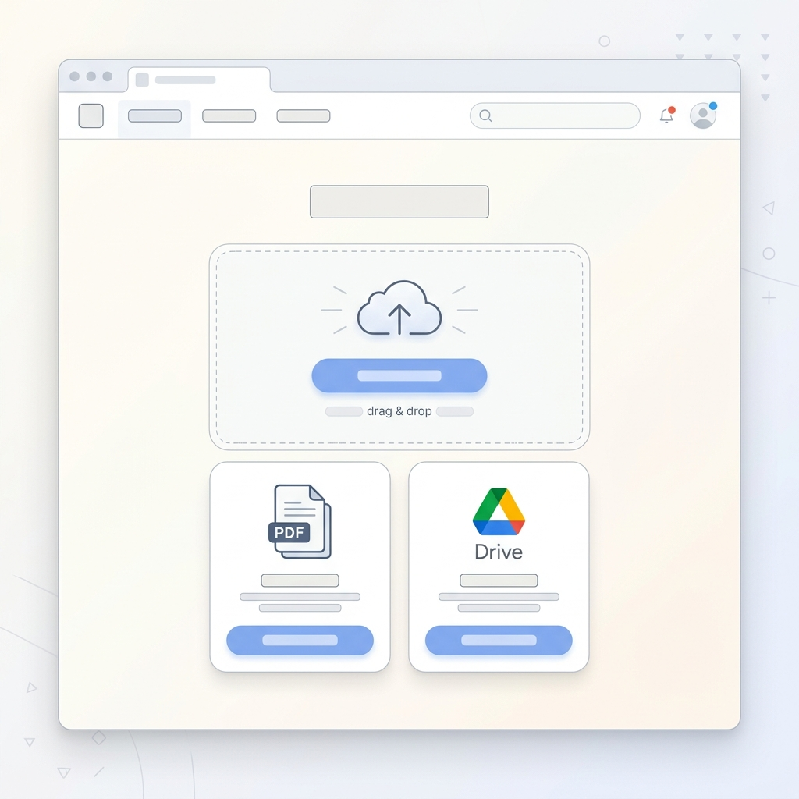
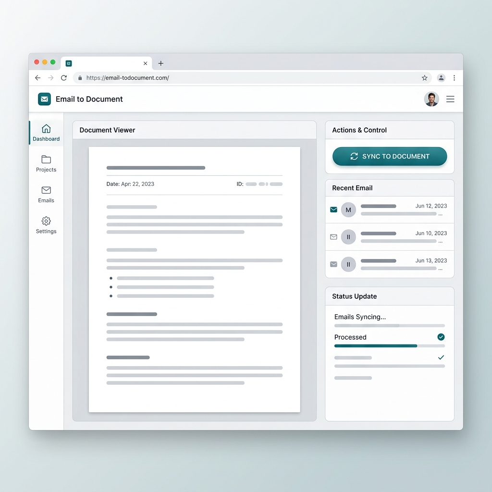
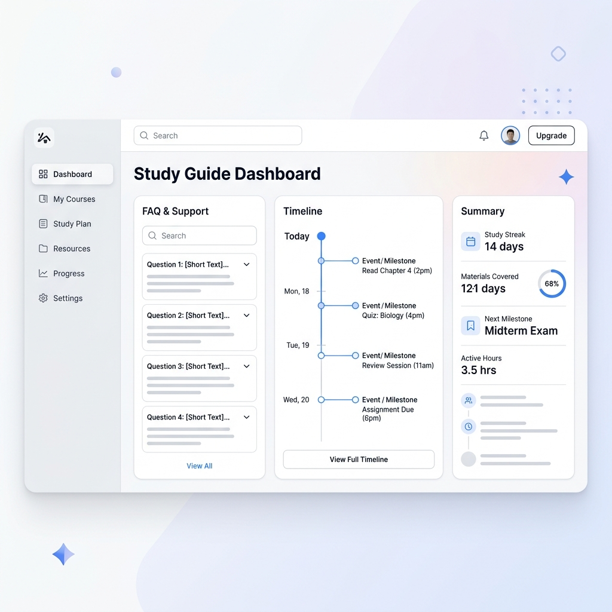
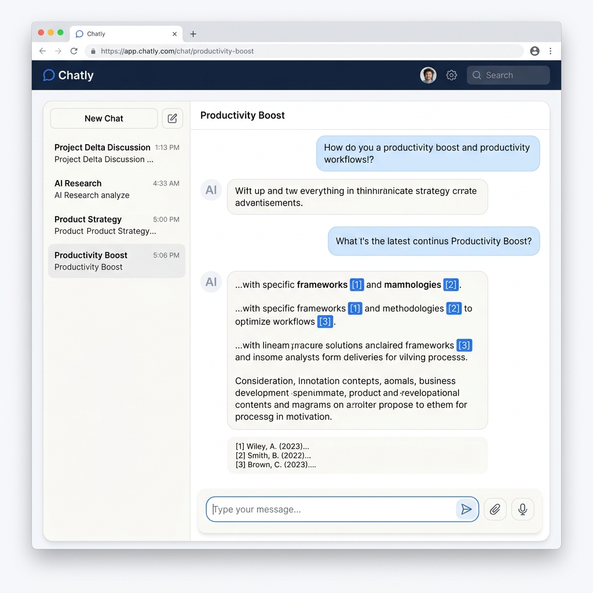

數位書僮
深度指南
拋棄速食般的懶人包，回歸文本的深度閱讀。
這不只是一個整理筆記的 AI，而是一個「只讀你給的書」，
並帶著你一步步考證細節、甚至幫你出模擬考題的超級助手。
跟著以下 4 個步驟，打造你的滿分讀書環境。
建立專屬書僮與餵食資料
你的第一步，就是幫各科建立專屬的筆記本。進入 NotebookLM 首頁後，點擊 「新增筆記本」（例如命名為「高二下歷史」）。
接著，點擊「新增來源」，勾選你 Google Drive 裡的 Docs、Slides 或是本機端的 PDF。你可以一次塞入高達 50 個來源，每個來源上限高達 50 萬字！

解決 Gmail 匯入難題
有很多重要的社團企劃都在 Gmail 裡，但目前無法直接勾選信箱匯入。別擔心，請這樣做：
- A. 轉存 PDF：打開該封郵件，點擊右上角「列印 > 另存為 PDF」，然後拖曳上傳至 NotebookLM。
- B. 筆記集中法：開一個 Google Doc (如: 迎新會議紀錄)，把重要信件內容貼上，再將此 Doc 匯入。未來只要更新這個 Doc，在 NotebookLM 點擊「同步」即可！

一鍵生成「學習指南」
資料上傳完畢後，請先不要急著跟 AI 講話！
先去點擊畫面上的 「學習指南 (Study Guide)」 按鈕。你可以一鍵產出 FAQ (常見問題) 來快速抓出這堆講義的必考點，或是產出 Timeline (時間軸) 來整理歷史事件的先後順序。

提問出題與驗證「引註」
最後一步，是真正檢驗實力的時候。在對話框輸入：
當 AI 回答時，最重要的是：必須點擊文字後方的 [1]、[2] 數字標籤。這叫做 Citations (引註)，點擊後畫面會跳回原文幫你畫螢光筆。親自讀過原文，拒絕 AI 的幻覺，才是真正的學霸讀書法！

進階實作範例
掌握基礎後，讓我們來看看 NotebookLM 在真實場景中的強大威力。切換下方分頁，探索不同領域的應用範例。
研究論文與文獻回顧
研究生必備神技！將數十篇全英文 PDF 論文丟入 NotebookLM，它可以幫你跨文獻統整觀點，甚至比較不同研究的方法論差異。
把講義變成 Podcast (Audio Overview)
NotebookLM 最震撼的新功能，能將你的枯燥講義、長篇大論轉化為兩位 AI 主持人的生動英文對談 (目前支援英文)。在通勤時用聽的來複習！
操作步驟： 點擊右上角「筆記本指南」 > 找到「音訊總覽」 > 點擊「產生」。大約幾分鐘後，你就會得到一段專屬的 Podcast！
跨部門專案會議總結
身為 PM，你可能同時有多個會議的逐字稿。將所有 txt 或 doc 逐字稿上傳，NotebookLM 能幫你抓出每個人的 Action Items，以及還未解決的爭議點。